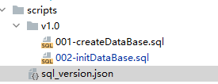

刷库
作用
- 维护管理数据库的版本信息，记录当前服务数据库版本。
- 支持实现连续多版本自动升级。
- 对数据库操作进行控制，可将多个数据库操作声明成事务。
开源Flyway
介绍
- 可执行数据库脚本语句，进行数据库升级
- 管理数据版本，记录当前数据的版本信息
- 版本升级支持事务，一个版本若失败则回滚
- 刷库需要在服务停止的情况下进行
自定义实现
核心业务实现逻辑
- 从sql_version.json 中获取所有的版本号及对应的脚本路径
- 读取项目的数据库连接配置，连接数据库
- 从数据库中读取当前的版本号
- 如果version表不存在，则创建version表，设置初始版本0.0，否则，获取version表的版本号字段对应的值
- 循环判断 sql_version.json 中获取所有的版本号
- 如果json版本号 > 表中的版本号，则按序执行对应的sql语句，如3.0版本的时候，不需要执行2.0的sql
- sql执行全部成功，则返回true，否则以异常的形式抛出
刷库规范定义
bin目录下建upgrade_db.sh文件
#!/usr/bin/env bash
app_class_name=com.hongcheng.aibigdata.userservice.UserServiceApplication
pid=`jps -vm |grep ${app_class_name} |awk '{print $1}'`
BASE_HOME=$(cd `dirname $0`/../; pwd)
db_class=com.hongcheng.aibigdata.common.db.Upgrade
if [ $pid ]
then
echo "海星服务正在运行，请停止服务后进行刷库"
else
# 单独通过java执行
SQL_PATH=$BASE_HOME/scripts/sql_version.json
java -Dbase.dir=${BASE_HOME} -cp BASE_HOME/lib/*:BASE_HOME/conf/. -Dloader.main=${db_class} org.springframework.boot.loader.PropertiesLauncher $SQL_PATH
if [ $? -eq 0 ]; then
echo "刷库成功"
else
echo "刷库失败，请查看具体异常"
fi
fi
集成common.util包
核心代码如下：
import java.io.File;
import java.io.IOException;
import java.io.InputStreamReader;
import java.io.Reader;
import java.nio.charset.StandardCharsets;
import java.sql.Connection;
import java.sql.DatabaseMetaData;
import java.sql.DriverManager;
import java.sql.PreparedStatement;
import java.sql.ResultSet;
import java.sql.SQLException;
import java.sql.Statement;
import java.util.List;
import java.util.Properties;
import com.hongcheng.aibigdata.common.util.JsonUtil;
import org.slf4j.Logger;
import org.slf4j.LoggerFactory;
import org.springframework.beans.factory.config.YamlPropertiesFactoryBean;
import org.springframework.core.io.ClassPathResource;
import org.springframework.core.io.FileSystemResource;
import org.springframework.core.io.Resource;
import org.springframework.util.FileCopyUtils;
/**
* 数据库升级脚本执行
*/
public class Upgrade {
private static final Logger LOG = LoggerFactory.getLogger(Upgrade.class);
/**
* Version表只有两个字段（property和value组成，长度限制为 char(64)
*/
private static final String VERSION_TABLE_NAME = "version";
private static final String APPLICATION_PATH = "application.yml";
/**
* 参数格式： --script-path $SCRIPT_HOME
*/
public static void main(String[] args) {
// 获取脚本的根目录
String sqlInfoJsonPath = args[0];
LOG.info("***********************************sql flush appliction start***********************************");
LOG.info("SQL description file is {}", sqlInfoJsonPath);
// 进行sql升级
try {
//传入StarFish HOME路径
new Upgrade().upgrade(sqlInfoJsonPath);
} catch (SQLException e) {
LOG.error("sql error", e);
} catch (Exception e) {
LOG.error("execute error:", e);
}
}
private Connection getConnection() {
YamlPropertiesFactoryBean yaml = new YamlPropertiesFactoryBean();
yaml.setResources(new ClassPathResource(APPLICATION_PATH));
Properties properties = yaml.getObject();
if (properties == null) {
LOG.error("init dataSource error , please check the config yml");
throw new NullPointerException("init dataSource properties error");
}
try {
Class.forName(properties.getProperty("spring.datasource.driver-class-name"));
return DriverManager.getConnection(properties.getProperty("spring.datasource.url"),
properties.getProperty("spring.datasource.username"),
properties.getProperty("spring.datasource.password"));
} catch (ClassNotFoundException | SQLException e) {
LOG.error("Find sql driver failed for:{}, exception: {}", properties.getProperty("spring.datasource.driver-class-name"), e);
System.exit(-1);
}
return null;
}
public boolean upgrade(String sqlInfoJsonPath) throws SQLException, IOException {
try (Connection conn = getConnection()) {
//从json中获取所有的版本号及对应的脚本路径
VersionJsonEntity versionJsonEntity = getVersionJsonEntity(sqlInfoJsonPath);
if (versionJsonEntity == null) {
return false;
}
List<VersionScriptEntity> versionScriptEntities = versionJsonEntity.getData();
// 2. 从数据库中读取当前的版本号
String versionDb = "0.0";
//SQL语句具备重复执行不报错，不需要设置autoCommit
if (!existVersion(conn, VERSION_TABLE_NAME)) {
// 2.1 如果version表不存在，则创建version表，设置初始版本0.0
createVersionTable(conn);
insertVersion(conn, versionDb);
} else {
// 2.2 否则，获取version表的版本号字段对应的值
versionDb = getVersion(conn);
}
LOG.info("current database version is {}", versionDb);
//for循环判断（3.0的时候，不需要执行2.0的sql）
for (VersionScriptEntity versionScriptEntity : versionScriptEntities) {
String versionValue = versionScriptEntity.getVersion();
List<String> sqlPaths = versionScriptEntity.getSql();
if (compareVersionNum(versionValue, versionDb)) {
// 3. 如果json版本号 > 表中的版本号，则执行对应的sql语句
LOG.info("start to init database version : {}", versionValue);
run(conn, sqlPaths, sqlInfoJsonPath);
updateVersion(conn, versionValue);
versionDb = versionValue;
}
}
LOG.info("update sql finish");
// sql执行全部成功，则返回true，否则以异常的形式抛出
}
return true;
}
private String loadJson(String fileName) throws IOException {
LOG.info("load json file {}", fileName);
File file = new File(fileName);
Resource resource = new FileSystemResource(file);
byte[] bytes;
try {
bytes = FileCopyUtils.copyToByteArray(resource.getInputStream());
return new String(bytes);
} catch (IOException e) {
LOG.error("load json error {}:", fileName);
throw e;
}
}
private VersionJsonEntity getVersionJsonEntity(String jsonPath) throws IOException {
String jsonString = loadJson(jsonPath);
//采用Java类解析，不解析成JsonNode
return JsonUtil.decode(jsonString, VersionJsonEntity.class);
}
/**
* 判断是否存在version表
*/
private boolean existVersion(Connection conn, String tableName) throws SQLException {
boolean flag;
DatabaseMetaData meta = conn.getMetaData();
String[] type = {"TABLE"};
String catalog = conn.getCatalog();
LOG.info("catalog is {} ", conn.getCatalog());
ResultSet rs = meta.getTables(catalog, null, tableName, type);
flag = rs.next();
LOG.info("check version is :{}", flag);
return flag;
}
/**
* 获取版本号
*/
private String getVersion(Connection conn) throws SQLException {
//预编译语句
// where property=version的条件（防止万一后面version表加其它的行）
String sql = "select value from version where property='version'";
try (PreparedStatement statement = conn.prepareStatement(sql)) {
ResultSet rs = statement.executeQuery();
// 4.处理数据库的返回结果(使用ResultSet类)
if (rs.next()) {
return rs.getString("value");
}
} catch (SQLException e) {
LOG.error("get version table error");
throw e;
}
return "";
}
/**
* 更新版本号
*/
private boolean updateVersion(Connection conn, String value) throws SQLException {
//预编译语句
String sql = "update version set value=? where property = 'version'";
try (PreparedStatement statement = conn.prepareStatement(sql)) {
statement.setString(1, value);
int i = statement.executeUpdate();
return i == 1;
} catch (SQLException e) {
LOG.error("update version table error");
throw e;
}
}
/**
* 插入版本号
*/
private boolean insertVersion(Connection conn, String value) throws SQLException {
//预编译语句
String sql = "insert into version(property,value) values('version',?)";
try (PreparedStatement statement = conn.prepareStatement(sql)) {
statement.setString(1, value);
int i = statement.executeUpdate();
return i == 1;
} catch (SQLException e) {
LOG.error("insert version table error");
throw e;
}
}
/**
* 建version表
*/
private boolean createVersionTable(Connection conn) throws SQLException {
LOG.info("create version table");
String sql = "CREATE TABLE version(" +
" `property` VARCHAR(64) NOT NULL," +
" `value` VARCHAR(64) NOT NULL," +
"PRIMARY KEY (`property`));";
try (Statement statement = conn.createStatement()) {
int i = statement.executeUpdate(sql);
return i == 1;
} catch (SQLException e) {
LOG.error("create version table error");
throw e;
}
}
/**
* 运行指定的sql脚本
*
* @param sqlPaths 需要执行的sql脚本的路径集合
*/
private boolean run(Connection conn, List<String> sqlPaths, String sqlPathHome) throws IOException {
// 创建ScriptRunner，用于执行SQL脚本
ScriptRunner runner = new ScriptRunner(conn);
runner.setErrorLogWriter(null);
runner.setLogWriter(null);
// 执行SQL脚本
for (String sqlPath : sqlPaths) {
String filePath = sqlPathHome + sqlPath;
File file = new File(filePath);
Resource resource = new FileSystemResource(file);
Reader inputStreamReader = new InputStreamReader(resource.getInputStream(), StandardCharsets.UTF_8);
runner.runScript(inputStreamReader);
LOG.info("excute sql ：{}", sqlPath);
}
return true;
}
/**
* 比较版本
*
* @return true : first > second, otherwise false
*/
public boolean compareVersionNum(String versionValue, String versionDb) {
if (versionValue == null || versionDb == null) {
return false;
}
String[] versionChars = versionValue.split("\\.");
String[] dbChars = versionDb.split("\\.");
for (int i = 0; i < versionChars.length; i++) {
int versionInt = Integer.parseInt(versionChars[i]);
int versionDbInt = Integer.parseInt(dbChars[i]);
if (versionInt > versionDbInt) {
return true;
} else if (versionInt < versionDbInt) {
return false;
}
}
return false;
}
}
新建script文件夹
目录结构如下：

sql_version.json
{
"data": [
{
//按版本号执行
"version": "1.0",
"sql": [
//按序执行对应地址的sql脚本
"/v1.0/001-createDataBase.sql",
"/v1.0/002-initDataBase.sql"
]
}
]
}
对应实体类如下：
public class VersionJsonEntity {
private List<VersionScriptEntity> data;
public List<VersionScriptEntity> getData() {
return data;
}
public void setData(List<VersionScriptEntity> data) {
this.data = data;
}
}
public class VersionScriptEntity {
private String version;
private List<String> sql;
public String getVersion() {
return version;
}
public void setVersion(String version) {
this.version = version;
}
public List<String> getSql() {
return sql;
}
public void setSql(List<String> sql) {
this.sql = sql;
}
}